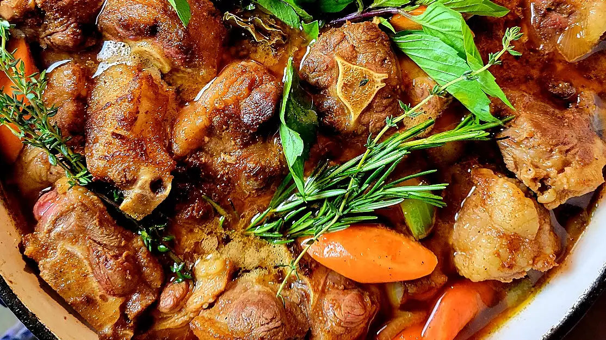

Jamaican Oxtail

Description
Jamaican oxtail in particular is reminiscent of the African one-pot cooking traditions used by the African slaves and maroons on the island as early as the mid-1500s
Ingredients
- 2½ pounds oxtail
- 1 tablespoon soy sauce
- 2 tablespoons unsalted butter
- 3 cups low-sodium beef broth
- 2 stalks celery, thinly sliced
- 1 teaspoon browning sauce (such as Grace®)
- 1 bunch fresh thyme
- ¼ teaspoon ground paprika
- 2 tablespoons vegetable oil
- 1 onion, chopped
Steps
- Place oxtail in a shallow dish. Combine soy sauce, Worcestershire sauce, salt, sugar,
garlic and herb seasoning, browning sauce, paprika, cayenne pepper, and black
pepper together in a small bowl. Rub both sides of oxtail with soy sauce mixture;
discard any excess.
- Heat vegetable oil in a large, deep skillet over medium-high heat.
Sear oxtail in hot oil until golden brown, about 3 minutes per side;
transfer to a plate and set aside.
- Sauté carrots, celery, onion, and garlic in the same skillet until softened, about 5 minutes.
Add beef broth, thyme, rosemary, and bay leaf; bring to a boil.
Add oxtail, with its juices, and butter.
Reduce heat to low, cover, and simmer until oxtail is fork tender, about 3 hours.
- Uncover skillet and increase heat to high. Cook, stirring occasionally, until sauce reduces and thickens, about 5 minutes.